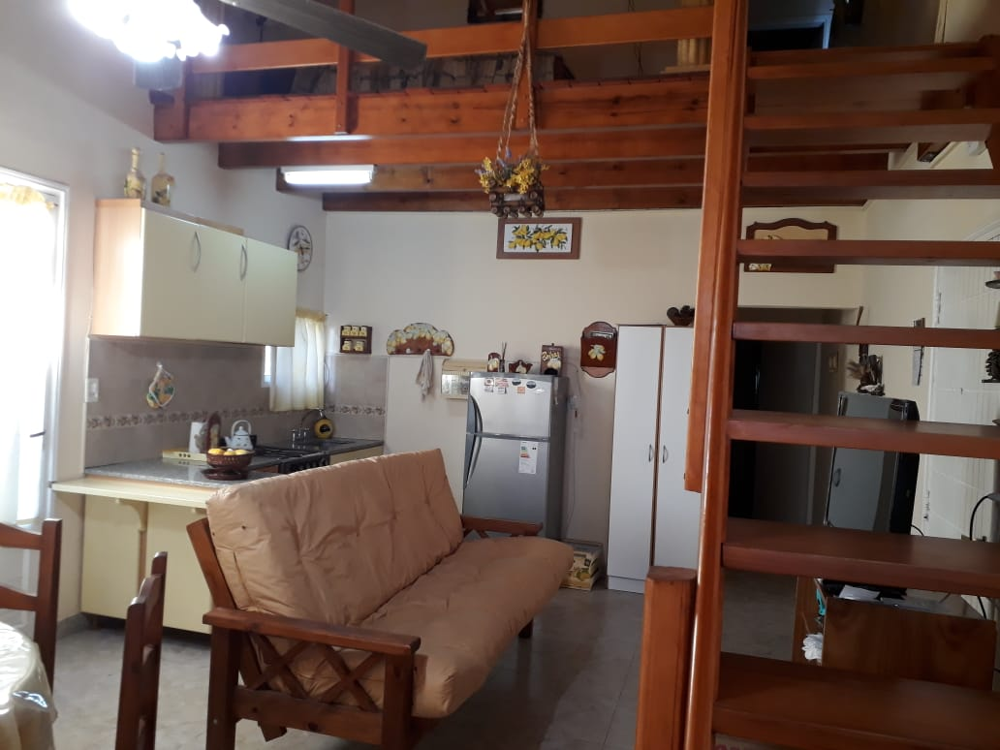
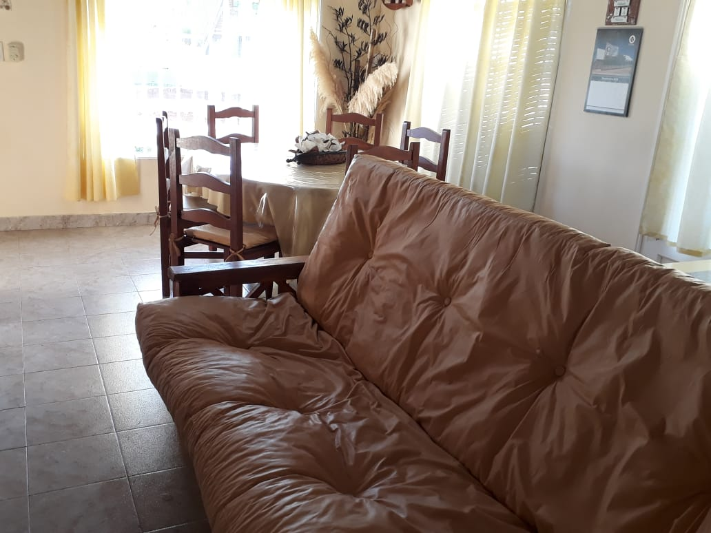

 <!--MODAL CHALET-->
 <aside id="modalChalet" class="modal-overlay">
    <div class="slideshow">
      <span class="btn-cerrar">&times;</span>

      <div id="carouselExampleIndicators" class="carousel slide" data-ride="carousel">
          <ol class="carousel-indicators">
            <li data-target="#carouselExampleIndicators" data-slide-to="0" class="active"></li>
            <li data-target="#carouselExampleIndicators" data-slide-to="1"></li>
            <li data-target="#carouselExampleIndicators" data-slide-to="2"></li>
            <li data-target="#carouselExampleIndicators" data-slide-to="3"></li>
            <li data-target="#carouselExampleIndicators" data-slide-to="4"></li>
            <li data-target="#carouselExampleIndicators" data-slide-to="5"></li>
            <li data-target="#carouselExampleIndicators" data-slide-to="6"></li>
          </ol>
          <div class="carousel-inner">
            <div class="carousel-item active">
                
            </div>
            <div class="carousel-item">
              
            </div>
            <div class="carousel-item">
              
            </div>
            <div class="carousel-item">
              
            </div>
            <div class="carousel-item">
              
            </div>
            <div class="carousel-item">
              
            </div>
            <div class="carousel-item">
              
            </div>
          </div>
          <a class="carousel-control-prev" href="#carouselExampleIndicators" role="button" data-slide="prev">
            <span class="carousel-control-prev-icon" aria-hidden="true"></span>
            <span class="sr-only">Previous</span>
          </a>
          <a class="carousel-control-next" href="#carouselExampleIndicators" role="button" data-slide="next">
            <span class="carousel-control-next-icon" aria-hidden="true"></span>
            <span class="sr-only">Next</span>
          </a>
        </div>
        
  </div>
</aside>